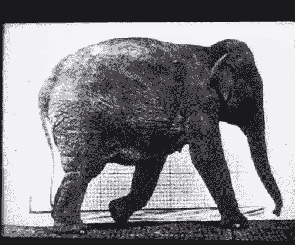
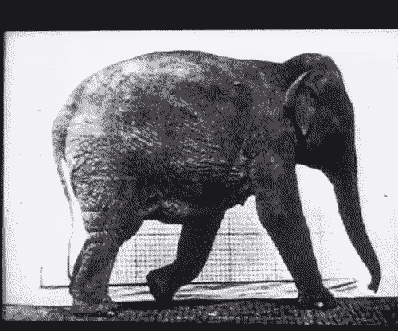

Le thaumatrope inventé par l'astronome John Hershel.
L'objet est alors un disque, maintenu par une ficelle, sur lequel on peut observer une cage sur une face et un oiseau sur l'autre. Ainsi, lorsqu’on faisait tourner le disque suffisamment vite, on avait l'illusion que l'oiseau était dans la cage.

Le phénakistiscope inventé Joseph Plateau.
Il comporte un disque en carton, percé de fentes, sur lequel un mouvement est décomposé en une séquence d'images fixes. Pour percevoir le mouvement, le spectateur se place en face d'un miroir et positionne ses yeux au niveau des fentes du disque. Il fait ensuite tourner le carton.
Le zootrope inventé simultanément par l’anglais William George Horner et l'autrichien Stampfer.
Un tambour percé de dix à douze fentes sur sa moitié supérieure abrite à l'intérieur une bande de dessins décomposant un mouvement cyclique. Le tambour est fixé sur un axe dans sa base inférieure, ce qui permet de le faire tourner. On perçoit les mouvements des séquences animées en boucle en regardant l'intérieur du tambour à travers les fentes pendant la rotation.
Le folioscope inventé par le français Pierre-Hubert Desvignes.Breveté par le britannique John Barnes Linnett.
Un folioscope est un petit livret de dessins ou de photographies qui représentent un personnage en mouvement, dont les gestes sont décomposés chronologiquement, et qui, feuilleté rapidement, procure à l'œil l'illusion que le sujet représenté est en mouvement
Le praxinoscope inventé par le français Émile Reynaud.
Le praxinoscope est l’amélioration du zootrope et du phénakistiscope. L’utilisation de miroir à facettes permet de reproduire un mouvement plus fluide et sa forme de manège tournant facilite le visionnage simultané d’une scène d’images par plusieurs personnes.
 

La chronophotographie inventée par le britannique Eadweard Muybridge.
La chronophotographie désigne une technique photographique qui consiste à prendre une succession très rapide de photographies, permettant de décomposer chronologiquement les phases successives d’un mouvement (humain ou animal) ou d’un phénomène physique, trop brefs pour être observés convenablement à l’œil nu.
Les frères Auguste & Louis Lumière déposent le brevet du Cinématographe en mars 1895 et organisent la première représentation publique et payante dans le salon indien du Grand Café à Paris.